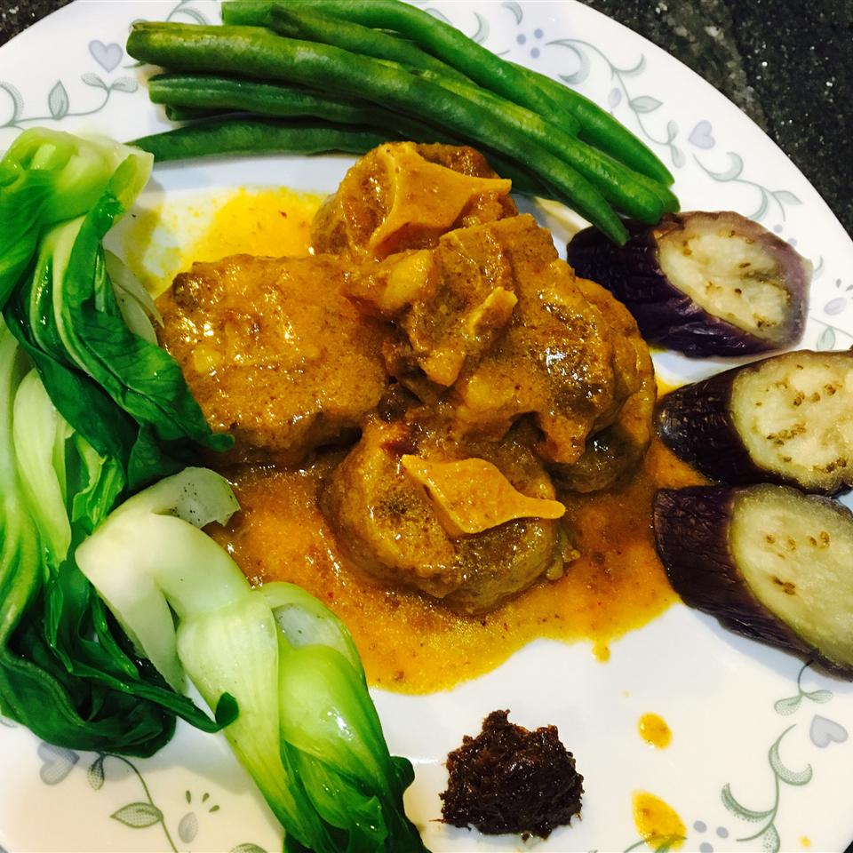

Filipino Oxtail Stew

Main Dish that is locally-served in Filipino Homes
A unique oxtail stew that is paired with peanut butter and beans.
It is a mixture of sweetness and saltiness, with the creamy texture of the soup and finally the combined taste of beef and vegies that adds a punch.
Ingredients
- 1 ½ pounds beef oxtail, cut into pieces
- 1 large onion, quartered
- 2 cloves garlic, chopped
- 1 teaspoon salt
- ½ teaspoon ground black pepper, or to taste
- 1 large eggplant, cut into 2-inch chunks
- ½ head bok choy, cut into 1-inch pieces
- ½ pound fresh green beans, trimmed and snapped into 2-inch pieces
- ¼ cup peanut butter, or as needed to thicken sauce
Steps
- Fill a large saucepan with water; add oxtail, onion, garlic, salt, and pepper. Bring to a boil, and simmer for 2 hours over medium-low heat, skimming off the foam occasionally, until oxtail meat is very tender and broth is reduced to 3 cups.
- Stir in eggplant, bok choy, and green beans; simmer for about 20 minutes, until vegetables are tender.
- Just before serving, place peanut butter in a small bowl and thin with 1 or 2 tablespoons of broth. Stir until smooth and add to stew.